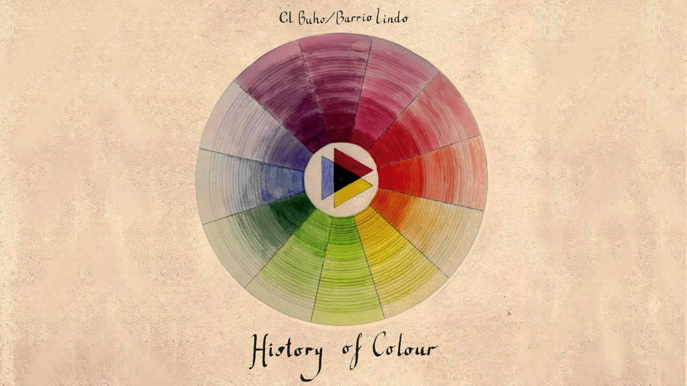

This book examines how the ever-changing role of colour in society has been reflected in manuscripts, stained glass, clothing, painting and popular culture. Colour is a natural phenomenon, of course, but it is also a complex cultural construct that resists generalization and, indeed, analysis itself. No doubt this is why serious works devoted to colour are rare, and rarer still are those that aim to study it in historical context. Many authors search for the universal or archetypal truths they imagine reside in colour, but for the historian, such truths do not exist. Colour is first and foremost a social phenomenon. There is no transcultural truth to colour perception, despite what many books based on poorly grasped neurobiology or – even worse – on pseudoesoteric pop psychology would have us believe. Such books unfortunately clutter the bibliography on the subject, and even do it harm.
The silence of historians on the subject of colour, or more particularly their difficulty in conceiving colour as a subject separate from other historical phenomena, is the result of three different sets of problems. The first concerns documentation and preservation. We see the colours transmitted to us by the past as time has altered them and not as they were originally. Moreover, we see them under light conditions that often are entirely different from those known by past societies. And finally, over the decades we have developed the habit of looking at objects from the past in black-and-white photographs and, despite the current diffusion of colour photography, our ways of thinking about and reacting to these objects seem to have remained more or less black and white.
The second set of problems concerns methodology. As soon as the historian seeks to study colour, he must grapple with a host of factors all at once: physics, chemistry, materials, and techniques of production, as well as iconography, ideology, and the symbolic meanings that colours convey. How to make sense of all of these elements? How can one establish an analytical model facilitating the study of images and coloured objects? No researcher, no method, has yet been able to resolve these problems, because among the numerous facts pertaining to colour, a researcher tends to select those facts that support his study and to conveniently forget those that contradict it. This is clearly a poor way to conduct research. The proper method – at least in the first phase of analysis – is to proceed as do palaeontologists (who must study cave paintings without the aid of texts): by extrapolating from the images and the objects themselves a logic and a system based on various concrete factors such as the rate of occurrence of particular objects and motifs, their distribution and disposition. In short, one undertakes the internal structural analysis with which any study of an image or coloured object should begin.
The third set of problems is philosophical: it is wrong to project our own conceptions and definitions of colour onto the images, objects and monuments of past centuries. Our judgements and values are not those of previous societies (and no doubt they will change again in the future). For the writer-historian looking at the definitions and taxonomy of colour, the danger of anachronism is very real. For example, the spectrum with its natural order of colours was unknown before the seventeenth century, while the notion of primary and secondary colours did not become common until the nineteenth century. These are not eternal notions but stages in the ever-changing history of knowledge.
I have reflected on such issues at greater length in my previous work, so while the present book does address certain of them, for the most part it is devoted to other topics. Nor is it concerned only with the history of colour in images and artworks – in any case that area still has many gaps to be filled. Rather, the aim of this book is to examine all kinds of objects in order to consider the different facets of the history of colour and to show how far beyond the artistic sphere this history reaches. The history of painting is one thing; that of colour is another, much larger, question. Most studies devoted to the history of colour err in considering only the pictorial, artistic or scientific realms. But the lessons to be learned from colour and its real interest lie elsewhere.
